Pots Analyzed
31
Version 1.10 Research
Indoor multi-pot photos converted into target-pot overlays, in-pot coverage metrics, spill estimates, and growth-ready tracking signals.
Pots Analyzed
31
Ready For Masks
7
Avg Focus Score
0.71
Avg In-Pot Spill
22.2%
Growth Baseline Coverage
41.9%
Top Next Step
prepare_thinning_count
| Algorithm | Metric | Status | Availability | Variation | Why It Matters |
|---|---|---|---|---|---|
primary_canopy_anchor | anchor_confidence | helpful | 100.0% | 0.202 | Provides a stable starting point for indoor pot localization when multiple neighboring pots are visible. |
label_box_detection | label_confidence | limited_current_data | 35.5% | 0.337 | Adds a second cue for indoor pot identity and helps diagnose cases where plant-only anchoring is ambiguous. |
pot_polygon_focus_crop | focus_score | helpful | 100.0% | 0.240 | Turns multi-pot frames into a reproducible per-pot region so growth metrics are less contaminated by adjacent seedlings. |
in_pot_vegetation_segmentation | pot_coverage | helpful | 100.0% | 0.554 | Closer to the real indoor use case than whole-image vegetation coverage because it suppresses nearby-pot noise. |
neighbor_spillover_estimation | neighbor_spill_ratio | helpful | 100.0% | 1.099 | Flags frames that still need custom masking or tighter capture before they are trustworthy for longitudinal tracking. |
temporal_growth_delta | growth_delta | promising_with_more_data | 41.9% | 1.709 | Gives a directional growth signal for pots that already have a baseline capture, even before a learned detector exists. |


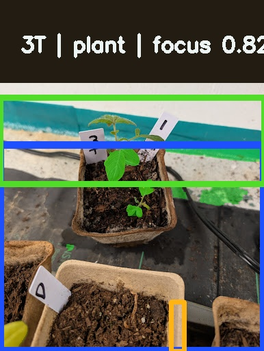


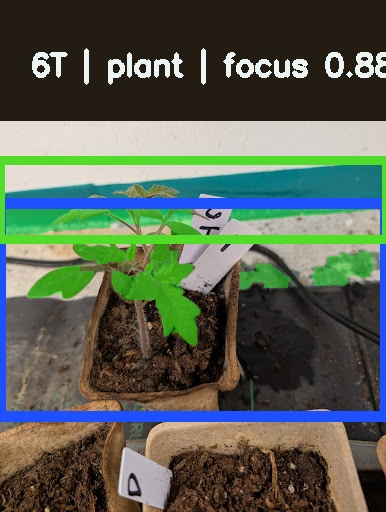
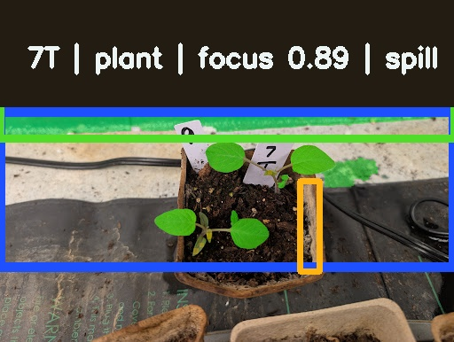

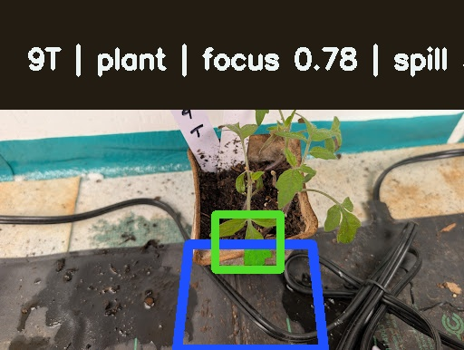
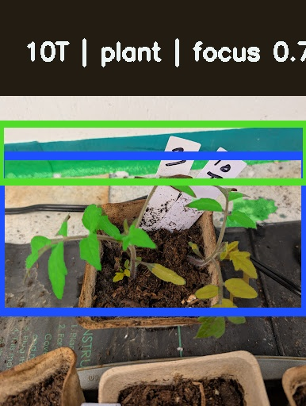
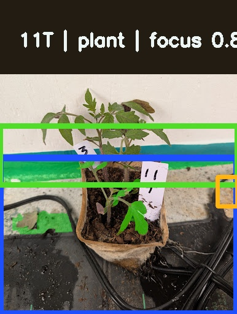
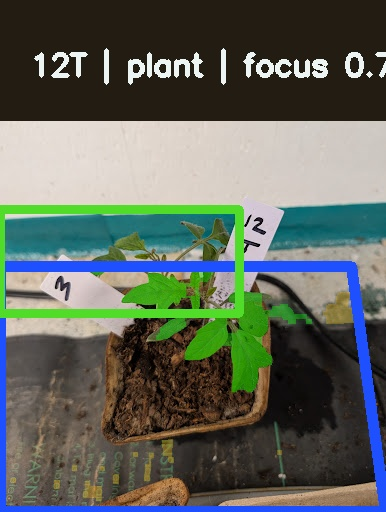
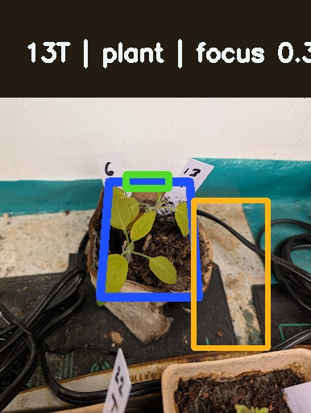

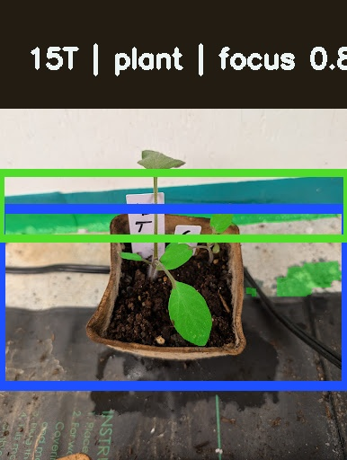

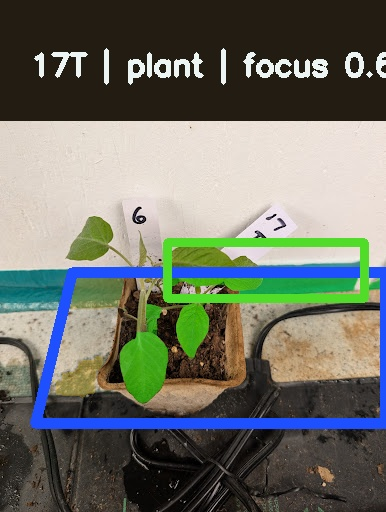


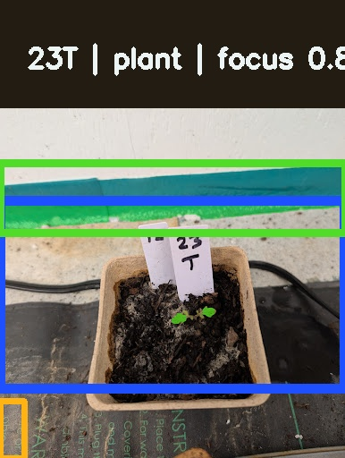
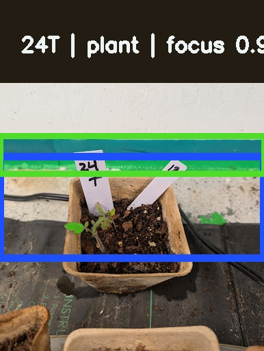
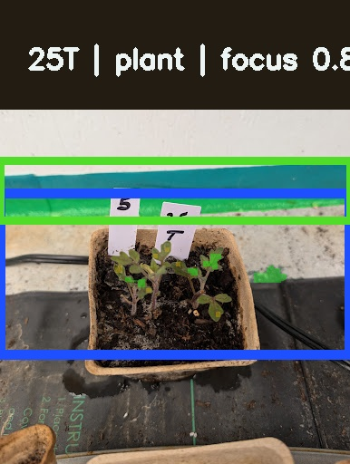
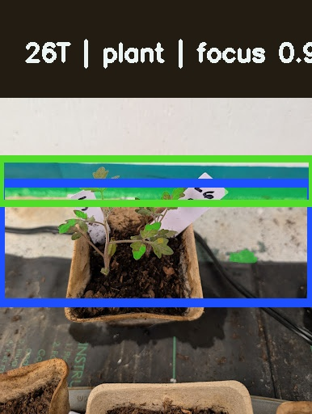


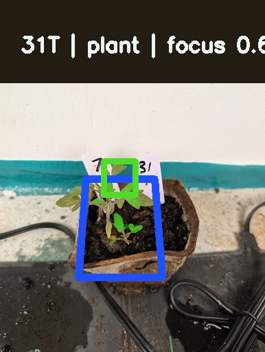